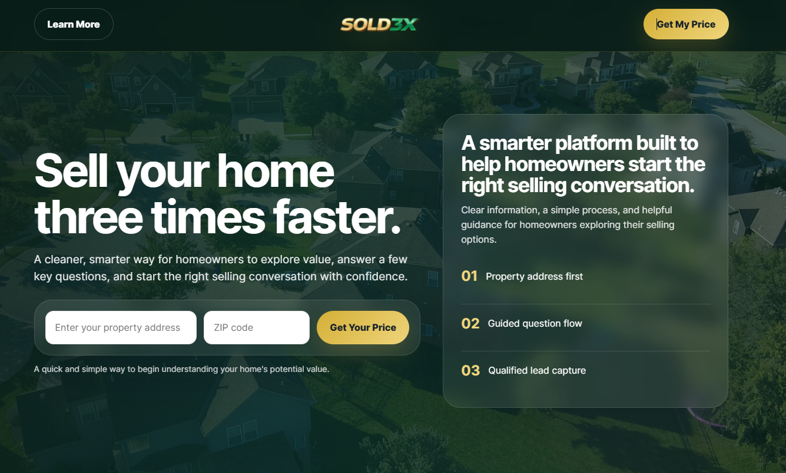
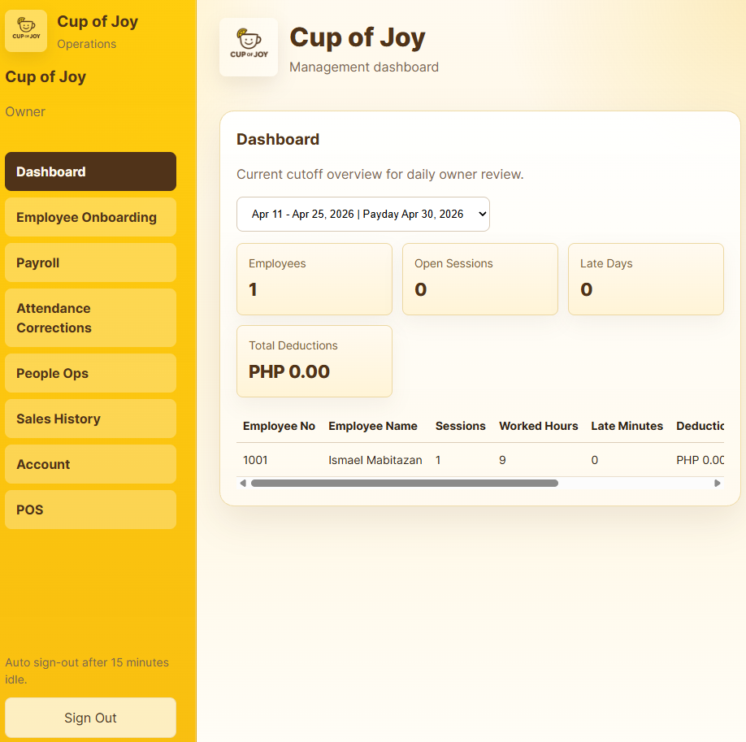

SOLD3X website
Lead generation website for a real estate brand focused on seller inquiries, form paths, inquiry flows, and Follow Up Boss API workflows.
Real estateLead captureCRM workflow
Work
A closer look at web, workflow, operations, and short form content examples that support the business service direction.
Featured projects
These projects show the type of practical business support this site is built around.

Lead generation website for a real estate brand focused on seller inquiries, form paths, inquiry flows, and Follow Up Boss API workflows.

Web app concept for food and beverage operations, including attendance tracking, QR check in, payroll logic, and POS workflow planning.
Content support
CapCut editing samples for TikTok, Reels, and simple social content preparation.